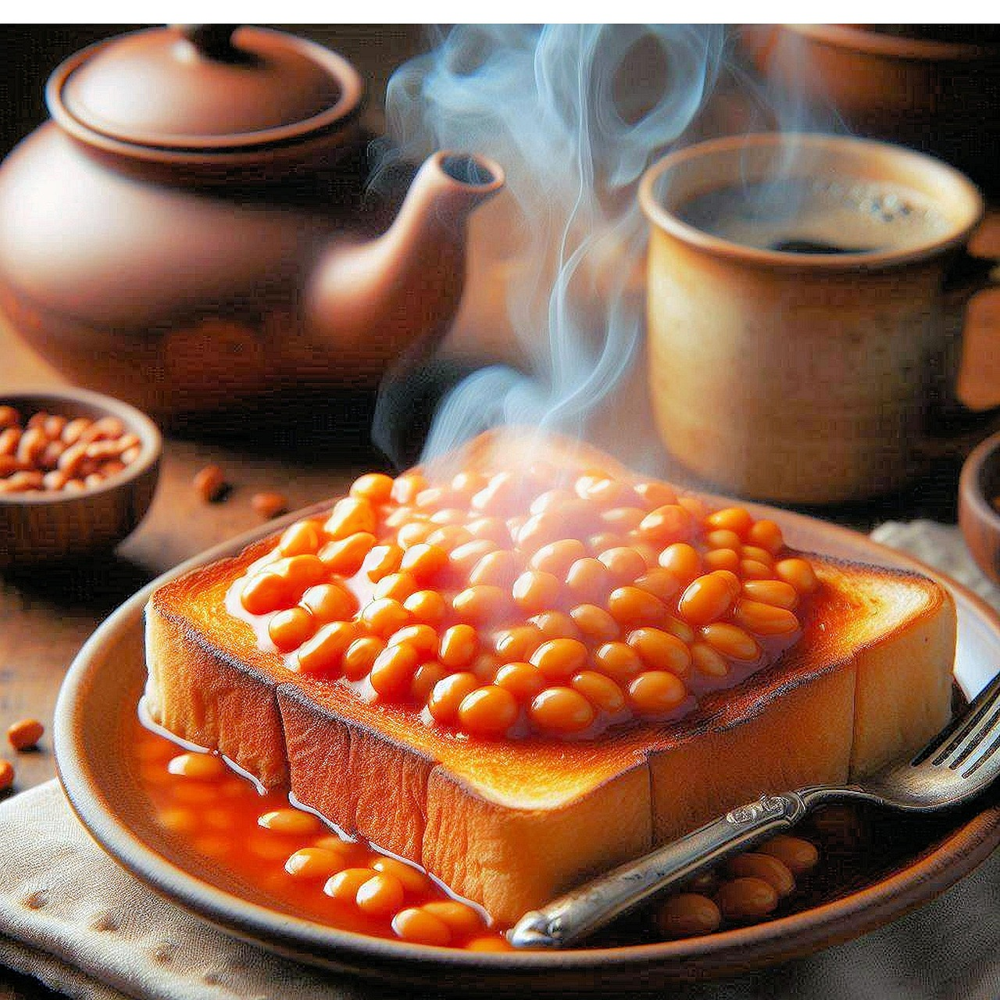

Home
Beans on toast

This is a quick and simple recipe for making beans on toast, a British culinary staple.
Ingredients:
- Sliced bread
- Salted butter
- Baked beans
- Toast two slices of bread in the toaster until golden brown.
- Whilst toasting, microwave the baked beans until piping hot.
- Butter the toast, and top with a generous layer of baked beans.